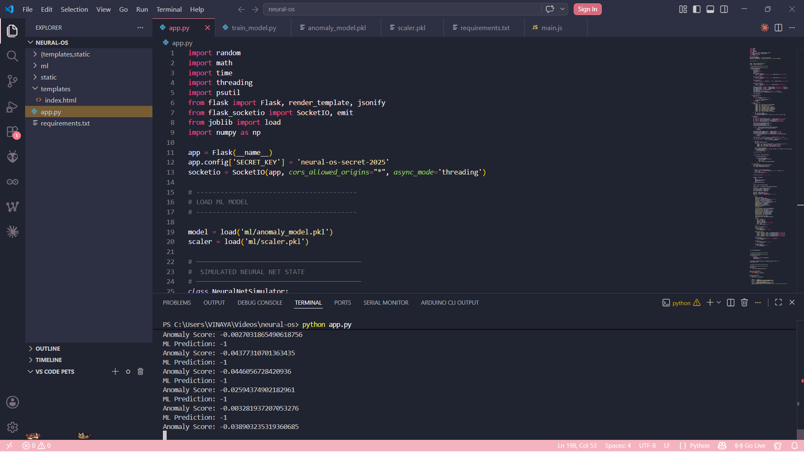
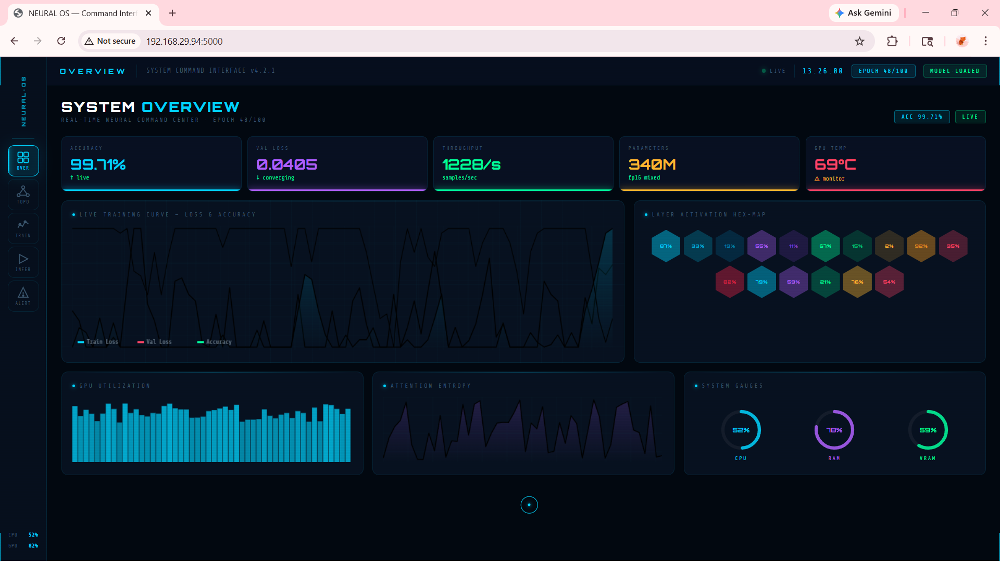
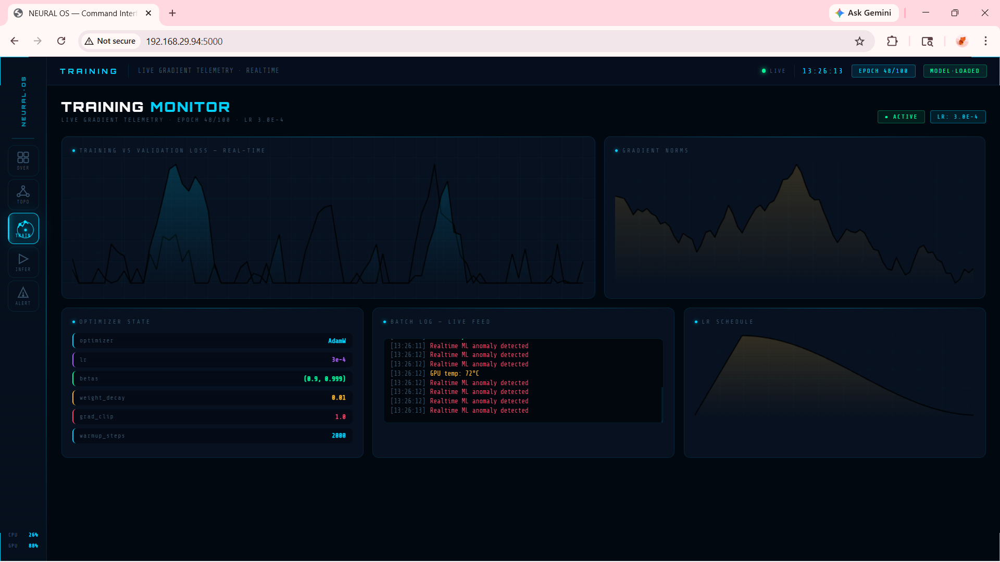
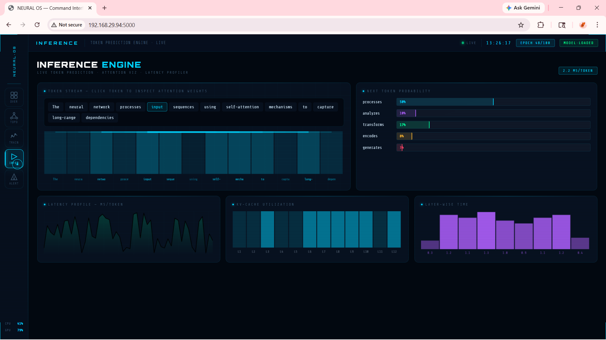
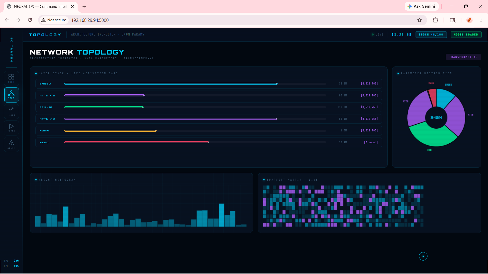
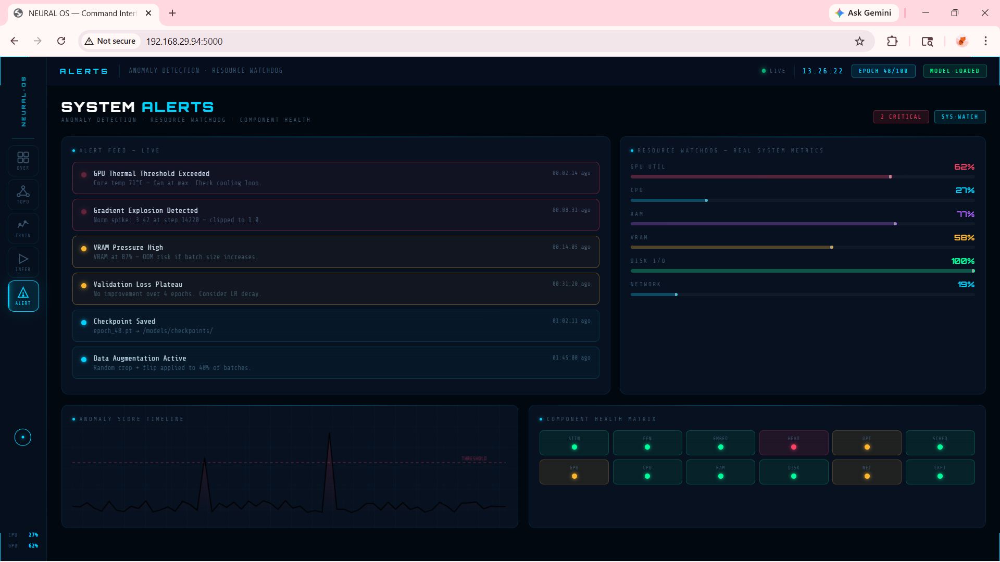
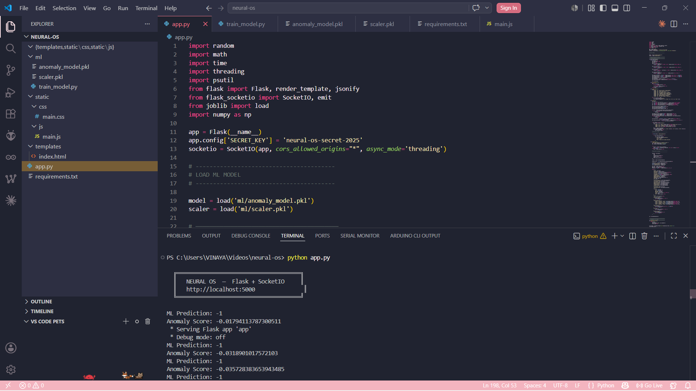

Neural-OS is a real-time neural observability platform designed to monitor, visualize and analyze machine learning systems during training and inference. The platform provides live telemetry, anomaly detection, resource monitoring, topology inspection and intelligent performance diagnostics through a futuristic monitoring interface.





